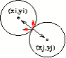
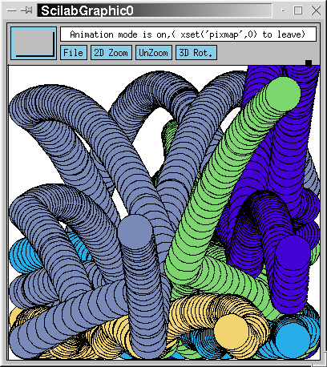

<!DOCTYPE HTML PUBLIC "-//W3C//DTD HTML 4.0 Transitional//EN" "http://www.w3.org/TR/REC-html40/loose.dtd"> 
 
<HTML>
 
<HEAD>
<TITLE>Scilab : l'environnement graphique (2/2) Animation </TITLE>
<META HTTP-EQUIV="Content-Type" CONTENT="text/html; charset=ISO-8859-1"> 
<META NAME="GENERATOR" CONTENT="hevea 1.05"> 
</HEAD>

<BODY BGCOLOR="white" TEXT="black">
<!--HEVEA command line is: hevea article2.tex -->
<!--HTMLHEAD-->
<!--ENDHTML-->
<!--CUT DEF section 1 -->
<BR>
<BR>
<TABLE WIDTH="526">
<TR>
<TD WIDTH="40"></TD>
<TD WIDTH="482" CLASS="titre-rouge"><A
HREF="http://www.saphir-control.fr/"></A> <BR>
<FONT><A
HREF="http://www.saphir-control.fr/">http://www.saphir-control.fr/</A></FONT> 
<P></P>
</TD>
</TR>
</TABLE>
<BR>
<A HREF="../index.htm"></A> <H1 ALIGN="center"><B>Scilab&nbsp;:
l'environnement graphique (2/2)<BR>
Animation</B> </H1>
<BR>
<BR>
<BR>
<BR>
<BR>
Tous ces articles en ligne sur Scilab ont &eacute;t&eacute; &eacute;crits pour
<A HREF="http://www.linuxmag-france.org/">LINUX MAGAZINE FRANCE</A> par les
d&eacute;veloppeurs du Scilab Group. Les articles sont sous
<A HREF="http://www.gnu.org/copyleft/fdl.html">licence FDL (Free Documentation
Licence) </A><BR>
<BR>
<EM> On a vu dans le num&eacute;ro pr&eacute;c&eacute;dent l'environnement
graphique de Scilab et son utilisation pour d&eacute;velopper des applications
graphiques. Dans ce num&eacute;ro, on pr&eacute;sente les
&eacute;l&eacute;ments n&eacute;cessaires pour construire des animations. </EM>
<BR>
<BR> On a d&eacute;j&agrave; vu les principes de base de l'environnement
graphique de Scilab et les fonctions qui permettent de modifier ses
propri&eacute;t&eacute;s. On a aussi vu quelques fonctions pour dessiner des
objets &eacute;l&eacute;mentaires. Dans cet article, on verra comment utiliser
ces fonctions pour construire des animations. On fait cela &agrave; travers un
exemple.

<!--TOC section Contexte graphique-->
<H2>Contexte graphique</H2>
<!--SEC END -->
Pour construire des animations, il faut d'abord choisir les param&egrave;tres
du contexte de la fen&ecirc;tre graphique.

<!--TOC paragraph Driver Rec et driver X11-->
<H5> Driver Rec et driver X11</H5>
<!--SEC END -->
Dans Scilab, on peut cr&eacute;er du graphique en utilisant plusieurs
<CODE>driver</CODE>s&nbsp;: <CODE>Rec</CODE>, <CODE>X11</CODE>,
<CODE>Postscritp</CODE>, <CODE>XFig</CODE> et <CODE>GIF</CODE>. Les deux
premiers seulement sont utilis&eacute;s pour l'affichage &agrave;
l'&eacute;cran. La diff&eacute;rence entre les <CODE>driver</CODE>s
<CODE>Rec</CODE> et <CODE>X11</CODE> est que le <CODE>driver</CODE>
<CODE>Rec</CODE> enregistre toutes les commandes graphiques pass&eacute;es.
Cela permet de rejouer automatiquement ces commandes si n&eacute;cessaire, par
exemple dans le cas d'un zoom, mais n'affectent en rien le r&eacute;sultat
final. L'enregistrement (et par cons&eacute;quence le graphique) est
effac&eacute; avec la commande <CODE>xbasc()</CODE>. Dans le cas d'animation,
il est pr&eacute;f&eacute;rable d'utiliser le <CODE>driver</CODE>
<CODE>X11</CODE> pour &eacute;viter les probl&egrave;mes de m&eacute;moire.
Cela peut se faire avec la fonction <CODE>driver</CODE> comme suit&nbsp;: <PRE>
--&gt; driver(&quot;X11&quot;)
</PRE>


<!--TOC paragraph Mode pixmap-->

<H5> Mode pixmap</H5>
<!--SEC END -->
Par d&eacute;faut, les commandes graphiques Scilab dessinent dans une zone
m&eacute;moire qu'on appelle la fen&ecirc;tre virtuelle&nbsp;; Scilab et le
Window Manager font le n&eacute;cessaire pour que le contenu de cette
fen&ecirc;tre soit affich&eacute; en permanence dans la fen&ecirc;tre visible.
En mode <CODE>pixmap</CODE> (la commande
<CODE>xset(&quot;pixmap&quot;,1)</CODE>), les commandes graphiques sont
dirig&eacute;es vers une zone m&eacute;moire tampon qu'on appelle le pixmap. Le
contenu du pixmap n'est pas affich&eacute;. Pour le visualiser, il faut
utiliser la commande <CODE>xset(&quot;wshow&quot;)</CODE> qui le copie dans la
fen&ecirc;tre virtuelle. L'int&ecirc;ret du mode <CODE>pixmap</CODE> est que
l'affichage &agrave; l'&eacute;cran peut se faire aux moments choisis par
l'utilisateur. Cela permet en particulier de construire des animations plus
fluides. La contrepartie est une perte de la vitesse de l'animation car la
commande <CODE>xset(&quot;wshow&quot;)</CODE> fait une recopie du contenu du
pixmap dans la fen&ecirc;tre virtuelle. Le temps de recopie d&eacute;pend
bien-entendu de la taille de la fen&ecirc;tre.

<!--TOC paragraph Mode Xor-->
<H5> Mode Xor</H5>
<!--SEC END -->
Une animation est une s&eacute;quence d'images &agrave; afficher dans une
boucle Scilab. On peut donc, &agrave; chaque it&eacute;ration, effacer
l'ancienne image et dessiner une nouvelle. Pour effacer l'image on peut
utiliser la commande <CODE>xset(&quot;wwpc&quot;)</CODE> si on est en mode
pixmap, ou les commandes <CODE>xbasc()</CODE> (<CODE>driver Rec</CODE>) ou
<CODE>clear()</CODE> (<CODE>driver X11</CODE>) sinon. Cela marche bien pour la
plupart des animations. Dans certaines animations, en particulier quand
seulement un petit nombre d'objets change de place d'une image &agrave;
l'autre, il peut &ecirc;tre plus efficace d'effacer et de ne redessiner que ces
objets l&agrave;. Pour cela, on peut utiliser la fonction <CODE>xclea</CODE>
qui efface une r&eacute;gion donn&eacute;e de l'image, mais la m&eacute;thode
la plus efficace est l'utilisation du mode <CODE>Xor</CODE>. En mode
<CODE>Xor</CODE>, quand on dessine dans une fen&ecirc;tre, le dessin ne
remplace pas le dessin pr&eacute;c&eacute;dent, mais il se combine avec. Par
d&eacute;faut, si on dessine une droite (<CODE>xsegs</CODE>) en noir, on a un
certain nombre de pixels dans l'image, repr&eacute;sentant la droite, qui
deviennent noirs. Mais en mode <CODE>Xor</CODE>, les couleurs finales de ces
pixels d&eacute;pendent de leurs couleurs initiales. La couleur finale est en
fait obtenue par l'op&eacute;ration <CODE>xor</CODE> bit-&agrave;-bit sur les
codages binaires des deux couleurs. Donc dessiner en rouge sur bleu en mode
<CODE>Xor</CODE> peut donner du jaune ou une autre couleur, cela d&eacute;pend
du codage des couleurs utilis&eacute; par le syst&egrave;me. Mais ce qui est
capital c'est que dans ce mode, pour effacer un dessin obtenu par une commande
graphique, il suffit de r&eacute;p&eacute;ter cette commande graphique. Un
exemple d'utilisation du mode <CODE>Xor</CODE> est l'&eacute;diteur graphique
de Scicos (boite &agrave; outils pour la mod&eacute;lisation et la simulation
des syt&egrave;mes dynamiques). Les op&eacute;rations d'&eacute;dition ne font
bouger en g&eacute;n&eacute;ral qu'un petit nombre d'objets dans un
sch&eacute;ma Scicos, le mode <CODE>Xor</CODE> est alors tr&egrave;s efficace.


<!--TOC section Exemple-->
<H2>Exemple</H2>
<!--SEC END -->
Pour bien comprendre comment une animation peut &ecirc;tre programm&eacute;e
dans Scilab, on va construire ici un exemple simple mais complet. On
consid&egrave;re l'animation du mouvement de <I>n</I> balles identiques dans
une boite en 2D. Les balles sont lanc&eacute;es &agrave; partir des positions
al&eacute;atoires &agrave; l'int&eacute;rieur de la boite avec des vitesses
intiales al&eacute;atoires. On supposera qu'il n'y a pas de frottement et que
les chocs entre les balles, et les chocs contre le sol et les parois sont
&eacute;lastiques.

<!--TOC paragraph Modèle-->
<H5> Mod&egrave;le</H5>
<!--SEC END -->
L'&eacute;quation du mouvement d'une balle (en dehors des chocs) est
donn&eacute;e par&nbsp;: <DIV ALIGN="center">
<TABLE CELLSPACING="2" CELLPADDING="0">
<TR>
<TD ALIGN="right" NOWRAP="NOWRAP"> <I>&yuml;</I></TD>
<TD ALIGN="center" NOWRAP="NOWRAP">=</TD>
<TD ALIGN="left" NOWRAP="NOWRAP"><I>g</I></TD>
</TR>
<TR>
<TD ALIGN="right" NOWRAP="NOWRAP"> <I>&#168;x</I></TD>
<TD ALIGN="center" NOWRAP="NOWRAP">=</TD>
<TD ALIGN="left" NOWRAP="NOWRAP">0 </TD>
</TR>
</TABLE>
</DIV>
o&ugrave; (<I>x</I>,<I>y</I>) repr&eacute;sente la position de la balle et
<I>g</I>=-9.8m/sec<SUP><FONT SIZE="2">2</FONT></SUP> (sur terre). On peut
bien-entendu simuler ce syst&egrave;me avec le solveur <CODE>ode</CODE> de
Scilab, mais dans ce cas on peut aussi trouver explicitement la solution. En
particulier, il est facile &agrave; voir que les solutions sont donn&eacute;es
par&nbsp;: <DIV ALIGN="center">
<TABLE CELLSPACING="2" CELLPADDING="0">
<TR>
<TD ALIGN="right" NOWRAP="NOWRAP"> <I>y</I>(<I>t</I>)</TD>
<TD ALIGN="center" NOWRAP="NOWRAP">=</TD>
<TD ALIGN="left" NOWRAP="NOWRAP"><TABLE CELLSPACING="0" CELLPADDING="0">
<TR VALIGN="middle">
<TD NOWRAP="NOWRAP"> </TD>
<TD NOWRAP="NOWRAP"><TABLE CELLSPACING="0" CELLPADDING="0">
<TR>
<TD NOWRAP="NOWRAP" ALIGN="center">1</TD>
</TR>
<TR>
<TD BGCOLOR="black"><TABLE BORDER="0" WIDTH="100%" CELLSPACING="0">
<TR>
<TD></TD>
</TR>
</TABLE>
</TD>
</TR>
<TR>
<TD NOWRAP="NOWRAP" ALIGN="center">2</TD>
</TR>
</TABLE>
</TD>
<TD NOWRAP="NOWRAP"><I>gt</I><SUP><FONT SIZE="2">2</FONT></SUP> +<I>bt</I>
+<I>c</I></TD>
</TR>
</TABLE>
</TD>
</TR>
<TR>
<TD ALIGN="right" NOWRAP="NOWRAP"> <I>x</I>(<I>t</I>)</TD>
<TD ALIGN="center" NOWRAP="NOWRAP">=</TD>
<TD ALIGN="left" NOWRAP="NOWRAP"><I>dt</I> + <I>e</I> </TD>
</TR>
</TABLE>
</DIV>
o&ugrave; (<I>e</I>,<I>c</I>) repr&eacute;sente la position intiale
(<I>t</I>=0) et (<I>d</I>,<I>b</I>) la vitesse intiale. Cette &eacute;quation
est valable, et donc peut &ecirc;tre simul&eacute;e, tant qu'il n'y a pas eu de
choc. Il faut donc calculer le temps <I>t</I><SUB><FONT
SIZE="2"><I>c</I></FONT></SUB> du premier choc. Celui-ci peut &ecirc;tre un
choc entre deux balles, ou entre une balle et la paroi de gauche, la paroi de
droite ou le sol. Il est facile de calculer le temps du choc de la balle avec
les parois. Soient <I>x</I><SUB><FONT SIZE="2"><I>min</I></FONT></SUB> et
<I>x</I><SUB><FONT SIZE="2"><I>max</I></FONT></SUB> l'emplacement des deux
parois verticales. Alors l'instant des prochains chocs potentiels avec ces deux
parois sont obtenus par la r&eacute;solution des &eacute;quations 
<DIV ALIGN="center">
<TABLE CELLSPACING="2" CELLPADDING="0">
<TR>
<TD ALIGN="right" NOWRAP="NOWRAP"><TABLE CELLSPACING="0" CELLPADDING="0">
<TR VALIGN="middle">
<TD NOWRAP="NOWRAP"> <I>x</I></TD>
<TD NOWRAP="NOWRAP"><TABLE CELLSPACING="0" CELLPADDING="0">
<TR>
<TD>&nbsp;</TD>
</TR>
<TR>
<TD NOWRAP="NOWRAP"><FONT SIZE="2"><I>min</I></FONT></TD>
</TR>
</TABLE>
</TD>
</TR>
</TABLE>
</TD>
<TD ALIGN="center" NOWRAP="NOWRAP">=</TD>
<TD ALIGN="left" NOWRAP="NOWRAP"><I>dt</I> + <I>e</I></TD>
</TR>
<TR>
<TD ALIGN="right" NOWRAP="NOWRAP"><TABLE CELLSPACING="0" CELLPADDING="0">
<TR VALIGN="middle">
<TD NOWRAP="NOWRAP"> <I>x</I></TD>
<TD NOWRAP="NOWRAP"><TABLE CELLSPACING="0" CELLPADDING="0">
<TR>
<TD>&nbsp;</TD>
</TR>
<TR>
<TD NOWRAP="NOWRAP"><FONT SIZE="2"><I>max</I></FONT></TD>
</TR>
</TABLE>
</TD>
</TR>
</TABLE>
</TD>
<TD ALIGN="center" NOWRAP="NOWRAP">=</TD>
<TD ALIGN="left" NOWRAP="NOWRAP"><I>dt</I> + <I>e</I> </TD>
</TR>
</TABLE>
</DIV>
ce qui donne <I>t</I><SUB><FONT
SIZE="2"><I>c</I></FONT></SUB>=(<I>x</I><SUB><FONT
SIZE="2"><I>min</I></FONT></SUB>-<I>e</I>)/<I>d</I>
et (<I>x</I><SUB><FONT SIZE="2"><I>max</I></FONT></SUB>-<I>e</I>)/<I>d</I>. De
m&ecirc;me, l'instant du choc avec le sol s'obtient par la r&eacute;solution de
l'&eacute;quation suivante&nbsp;: <DIV ALIGN="center">
<TABLE CELLSPACING="0" CELLPADDING="0">
<TR VALIGN="middle">
<TD NOWRAP="NOWRAP"> 0=</TD>
<TD NOWRAP="NOWRAP"><TABLE CELLSPACING="0" CELLPADDING="0">
<TR>
<TD NOWRAP="NOWRAP" ALIGN="center">1</TD>
</TR>
<TR>
<TD BGCOLOR="black"><TABLE BORDER="0" WIDTH="100%" CELLSPACING="0">
<TR>
<TD></TD>
</TR>
</TABLE>
</TD>
</TR>
<TR>
<TD NOWRAP="NOWRAP" ALIGN="center">2</TD>
</TR>
</TABLE>
</TD>
<TD NOWRAP="NOWRAP"><I>gt</I><SUP><FONT SIZE="2">2</FONT></SUP> +<I>bt</I>
+<I>c</I> </TD>
</TR>
</TABLE>
</DIV>
Cela est un polyn&ocirc;me du second degr&eacute;, on peut donc calculer ces
racines explicitement. On ne prendra que la solution positive. En ce qui
concerne les chocs entre deux balles, la situation est un peu plus complexe.
Soient (<I>x</I><SUB><FONT SIZE="2"><I>i</I></FONT></SUB>,<I>y</I><SUB><FONT
SIZE="2"><I>i</I></FONT></SUB>) et (<I>x</I><SUB><FONT
SIZE="2"><I>j</I></FONT></SUB>,<I>y</I><SUB><FONT
SIZE="2"><I>j</I></FONT></SUB>) les positions des deux balles. Alors un choc se
produit quand <DIV ALIGN="center">
(<I>x</I><SUB><FONT SIZE="2"><I>i</I></FONT></SUB>(<I>t</I>)-<I>x</I><SUB><FONT
SIZE="2"><I>j</I></FONT></SUB>(<I>t</I>))<SUP><FONT
SIZE="2">2</FONT></SUP>+(<I>y</I><SUB><FONT
SIZE="2"><I>i</I></FONT></SUB>(<I>t</I>)-<I>y</I><SUB><FONT
SIZE="2"><I>j</I></FONT></SUB>(<I>t</I>))<SUP><FONT
SIZE="2">2</FONT></SUP>-(2<I>r</I>)<SUP><FONT SIZE="2">2</FONT></SUP>=0 
</DIV>
o&ugrave; <I>r</I> repr&eacute;sente le rayon des balles. En rempla&ccedil;ant
<I>x</I><SUB><FONT SIZE="2"><I>i</I></FONT></SUB>(<I>t</I>), <I>x</I><SUB><FONT
SIZE="2"><I>j</I></FONT></SUB>(<I>t</I>), <I>y</I><SUB><FONT
SIZE="2"><I>i</I></FONT></SUB>(<I>t</I>) et <I>y</I><SUB><FONT
SIZE="2"><I>j</I></FONT></SUB>(<I>t</I>) par les expressions explicites, on
trouve encore une &eacute;quation du second degr&eacute;&nbsp;: 
<DIV ALIGN="center">
<I>At</I><SUP><FONT SIZE="2">2</FONT></SUP> + 2<I>Bt</I> + <I>C</I>=0 
</DIV>
o&ugrave; <DIV ALIGN="center">
<TABLE CELLSPACING="2" CELLPADDING="0">
<TR>
<TD ALIGN="right" NOWRAP="NOWRAP"> <I>A</I></TD>
<TD ALIGN="center" NOWRAP="NOWRAP">=</TD>
<TD ALIGN="left" NOWRAP="NOWRAP">(<I>d</I><SUB><FONT
SIZE="2"><I>i</I></FONT></SUB>-<I>d</I><SUB><FONT
SIZE="2"><I>j</I></FONT></SUB>)<SUP><FONT
SIZE="2">2</FONT></SUP>+(<I>b</I><SUB><FONT
SIZE="2"><I>i</I></FONT></SUB>-<I>b</I><SUB><FONT
SIZE="2"><I>j</I></FONT></SUB>)<SUP><FONT SIZE="2">2</FONT></SUP></TD>
</TR>
<TR>
<TD ALIGN="right" NOWRAP="NOWRAP"> <I>B</I></TD>
<TD ALIGN="center" NOWRAP="NOWRAP">=</TD>
<TD ALIGN="left" NOWRAP="NOWRAP">(<I>d</I><SUB><FONT
SIZE="2"><I>i</I></FONT></SUB>-<I>d</I><SUB><FONT
SIZE="2"><I>j</I></FONT></SUB>)(<I>e</I><SUB><FONT
SIZE="2"><I>i</I></FONT></SUB>-<I>e</I><SUB><FONT
SIZE="2"><I>j</I></FONT></SUB>)+(<I>b</I><SUB><FONT
SIZE="2"><I>i</I></FONT></SUB>-<I>b</I><SUB><FONT
SIZE="2"><I>j</I></FONT></SUB>)(<I>c</I><SUB><FONT
SIZE="2"><I>i</I></FONT></SUB>-<I>cj</I>)</TD>
</TR>
<TR>
<TD ALIGN="right" NOWRAP="NOWRAP"> <I>C</I></TD>
<TD ALIGN="center" NOWRAP="NOWRAP">=</TD>
<TD ALIGN="left" NOWRAP="NOWRAP">(<I>e</I><SUB><FONT
SIZE="2"><I>i</I></FONT></SUB>-<I>e</I><SUB><FONT
SIZE="2"><I>j</I></FONT></SUB>)<SUP><FONT
SIZE="2">2</FONT></SUP>+(<I>c</I><SUB><FONT
SIZE="2"><I>i</I></FONT></SUB>-<I>cj</I>)<SUP><FONT
SIZE="2">2</FONT></SUP>-4<I>r</I><SUP><FONT SIZE="2">2</FONT></SUP> </TD>
</TR>
</TABLE>
</DIV>
L'instant du choc donc s'obtient par la plus petite racine r&eacute;elle et
positive de ce polynome du second degr&eacute;. Donc pour trouver l'instant du
prochain choc, il faut calculer les temps de tous les chocs potentiels et
choisir le plus petit. <BR>
<BR>
L'effet du choc est de changer les vitesses des balles. Quand une balle
rencontre une paroi, la composante de sa vitesse dans la direction <I>x</I>
change de signe, quand elle rencontre le sol, la composante dans la direction
<I>y</I> change de signe. Si l'instant du choc est <I>t</I>=0, cela revient
respectivement &agrave; changer les signes de <I>d</I> et de <I>b</I>. Le choc
entre deux balles est plus difficile &agrave; mod&eacute;liser. Au moment du
choc, on suppose que les deux balles subissent des impulsions, &eacute;gales
mais dans le sens oppos&eacute;, en quantit&eacute; du mouvement dans la
direction normale au point du contact (figure&nbsp;<A HREF="#des">1</A>). <BR>
<BR>
<CENTER>
<P></P>
</CENTER>
<BR>
<BR>
<DIV ALIGN="center">
Figure 1: L'impulsion du choc. 
</DIV>
<A NAME="des"></A> <BR>
<BR>
<BR>
Donc si on suppose que l'instant du choc est <I>t</I>=0, l'effet du choc est de
modifier les vitesses <I>d</I><SUB><FONT SIZE="2"><I>i</I></FONT></SUB>,
<I>b</I><SUB><FONT SIZE="2"><I>i</I></FONT></SUB>, <I>d</I><SUB><FONT
SIZE="2"><I>i</I></FONT></SUB> et <I>d</I><SUB><FONT
SIZE="2"><I>j</I></FONT></SUB> comme suit&nbsp;: <DIV ALIGN="center">
<TABLE CELLSPACING="2" CELLPADDING="0">
<TR>
<TD ALIGN="right" NOWRAP="NOWRAP"> <I>b</I><SUB><FONT
SIZE="2"><I>i</I></FONT></SUB>=<I>b</I><SUB><FONT
SIZE="2"><I>i</I></FONT></SUB>+<FONT
FACE="symbol">a</FONT>,&nbsp;<I>b</I><SUB><FONT
SIZE="2"><I>j</I></FONT></SUB>=<I>b</I><SUB><FONT
SIZE="2"><I>j</I></FONT></SUB>-<FONT FACE="symbol">a</FONT>,</TD>
</TR>
<TR>
<TD ALIGN="right" NOWRAP="NOWRAP"> <I>d</I><SUB><FONT
SIZE="2"><I>i</I></FONT></SUB>=<I>d</I><SUB><FONT
SIZE="2"><I>i</I></FONT></SUB>-<FONT
FACE="symbol">b</FONT>,&nbsp;<I>d</I><SUB><FONT
SIZE="2"><I>j</I></FONT></SUB>=<I>d</I><SUB><FONT
SIZE="2"><I>j</I></FONT></SUB>+<FONT FACE="symbol">b</FONT>, </TD>
</TR>
</TABLE>
</DIV>
o&ugrave; <FONT FACE="symbol">a</FONT> et <FONT FACE="symbol">b</FONT>
v&eacute;rifient <DIV ALIGN="center">
<TABLE CELLSPACING="0" CELLPADDING="0">
<TR VALIGN="middle">
<TD NOWRAP="NOWRAP"> </TD>
<TD NOWRAP="NOWRAP"><TABLE CELLSPACING="0" CELLPADDING="0">
<TR>
<TD NOWRAP="NOWRAP" ALIGN="center"><FONT FACE="symbol">a</FONT></TD>
</TR>
<TR>
<TD BGCOLOR="black"><TABLE BORDER="0" WIDTH="100%" CELLSPACING="0">
<TR>
<TD></TD>
</TR>
</TABLE>
</TD>
</TR>
<TR>
<TD NOWRAP="NOWRAP" ALIGN="center"><FONT FACE="symbol">b</FONT></TD>
</TR>
</TABLE>
</TD>
<TD NOWRAP="NOWRAP">=</TD>
<TD NOWRAP="NOWRAP"><TABLE CELLSPACING="0" CELLPADDING="0">
<TR>
<TD NOWRAP="NOWRAP" ALIGN="center"><I>c</I><SUB><FONT
SIZE="2"><I>i</I></FONT></SUB>-<I>c</I><SUB><FONT
SIZE="2"><I>j</I></FONT></SUB></TD>
</TR>
<TR>
<TD BGCOLOR="black"><TABLE BORDER="0" WIDTH="100%" CELLSPACING="0">
<TR>
<TD></TD>
</TR>
</TABLE>
</TD>
</TR>
<TR>
<TD NOWRAP="NOWRAP" ALIGN="center"><I>e</I><SUB><FONT
SIZE="2"><I>j</I></FONT></SUB>-<I>e</I><SUB><FONT
SIZE="2"><I>i</I></FONT></SUB></TD>
</TR>
</TABLE>
</TD>
<TD NOWRAP="NOWRAP"> </TD>
</TR>
</TABLE>
</DIV>
Cette relation qui vient de l'hypoth&egrave;se de l'absence de frottement,
permet de calculer <FONT FACE="symbol">b</FONT> en fonction de
<FONT FACE="symbol">a</FONT>, mais ne permet pas de calculer ce dernier. En
effet, on n'a pas encore pris en compte la conservation de l'&eacute;nergie ce
qui implique que la somme des carr&eacute;s des composantes des vitesses des
deux balles, avant le choc et celle d'apr&egrave;s, doivent &ecirc;tre
&eacute;gales&nbsp;: <DIV ALIGN="center">
<I>b</I><SUB><FONT SIZE="2"><I>i</I></FONT></SUB><SUP><FONT
SIZE="2">2</FONT></SUP>+<I>b</I><SUB><FONT
SIZE="2"><I>j</I></FONT></SUB><SUP><FONT
SIZE="2">2</FONT></SUP>+<I>d</I><SUB><FONT
SIZE="2"><I>i</I></FONT></SUB><SUP><FONT
SIZE="2">2</FONT></SUP>+<I>d</I><SUB><FONT
SIZE="2"><I>j</I></FONT></SUB><SUP><FONT
SIZE="2">2</FONT></SUP>=(<I>b</I><SUB><FONT
SIZE="2"><I>i</I></FONT></SUB>+<FONT FACE="symbol">a</FONT>)<SUP><FONT
SIZE="2">2</FONT></SUP>+ (<I>b</I><SUB><FONT
SIZE="2"><I>j</I></FONT></SUB>-<FONT FACE="symbol">a</FONT>)<SUP><FONT
SIZE="2">2</FONT></SUP>+(<I>d</I><SUB><FONT
SIZE="2"><I>i</I></FONT></SUB>-<FONT FACE="symbol">b</FONT>)<SUP><FONT
SIZE="2">2</FONT></SUP>+(<I>d</I><SUB><FONT
SIZE="2"><I>j</I></FONT></SUB>+<FONT FACE="symbol">b</FONT>)<SUP><FONT
SIZE="2">2</FONT></SUP> 
</DIV>
Cela permet maintenant de calculer <FONT FACE="symbol">a</FONT> (et donc
<FONT FACE="symbol">b</FONT>) de mani&egrave;re unique. On trouve&nbsp;: 
<DIV ALIGN="center">
<FONT FACE="symbol">a</FONT>=-(<I>b</I><SUB><FONT
SIZE="2"><I>i</I></FONT></SUB>-<I>d</I><SUB><FONT
SIZE="2"><I>i</I></FONT></SUB>/<FONT FACE="symbol">d</FONT>-<I>b</I><SUB><FONT
SIZE="2"><I>j</I></FONT></SUB>+<I>d</I><SUB><FONT
SIZE="2"><I>j</I></FONT></SUB>/<FONT FACE="symbol">d</FONT>)/(1+(1/<FONT
FACE="symbol">d</FONT>)<SUP><FONT SIZE="2">2</FONT></SUP>) 
</DIV>
avec <FONT FACE="symbol">b</FONT>=<FONT FACE="symbol">a</FONT>/<FONT
FACE="symbol">d</FONT> o&ugrave; <DIV ALIGN="center">
<TABLE CELLSPACING="0" CELLPADDING="0">
<TR VALIGN="middle">
<TD NOWRAP="NOWRAP"> <FONT FACE="symbol">d</FONT>=</TD>
<TD NOWRAP="NOWRAP"><TABLE CELLSPACING="0" CELLPADDING="0">
<TR>
<TD NOWRAP="NOWRAP" ALIGN="center"><I>c</I><SUB><FONT
SIZE="2"><I>i</I></FONT></SUB>-<I>c</I><SUB><FONT
SIZE="2"><I>j</I></FONT></SUB></TD>
</TR>
<TR>
<TD BGCOLOR="black"><TABLE BORDER="0" WIDTH="100%" CELLSPACING="0">
<TR>
<TD></TD>
</TR>
</TABLE>
</TD>
</TR>
<TR>
<TD NOWRAP="NOWRAP" ALIGN="center"><I>e</I><SUB><FONT
SIZE="2"><I>j</I></FONT></SUB>-<I>e</I><SUB><FONT
SIZE="2"><I>i</I></FONT></SUB></TD>
</TR>
</TABLE>
</TD>
<TD NOWRAP="NOWRAP">. </TD>
</TR>
</TABLE>
</DIV>


<!--TOC paragraph Simulation-->
<H5> Simulation</H5>
<!--SEC END -->
La simulation commence par l'initialisation des positions et des vitesses des
balles&nbsp;: <PRE>

function [b,c,d,e]=initialise(n)
rand(&quot;normal&quot;) //loi normale utilisee pour rand
b=rand(n,1);d=rand(n,1); //vitesses intiales
c=3*[1:n]';e=rand(n,1); //positions initiales
endfunction

</PRE>
Ici <CODE>n</CODE> repr&eacute;sente le nombre de balles. Apr&egrave;s, la
simulation fonctionne dans une boucle infinie de la mani&egrave;re
suivante&nbsp;: 
<OL TYPE="1">
<LI> On est &agrave; <I>t</I>=0 et on calcule l'instant du prochain choc
<I>t</I><SUB><FONT SIZE="2"><I>c</I></FONT></SUB>. On a vu que le calcul de
<I>t</I><SUB><FONT SIZE="2"><I>c</I></FONT></SUB> n&eacute;cessite la
r&eacute;solution de plusieurs &eacute;quations du second degr&eacute;, ce qui
peut &ecirc;tre vectoris&eacute; dans Scilab comme suit&nbsp;: <PRE>

function [tc,k]=prochain_choc(b,c,d,e)
A=(P*b).^2+(P*d).^2;
B=(P*b).*(P*c)+(P*d).*(P*e);
C=(P*c).^2+(P*e).^2-4*r2;
rac=[(-b-sqrt(b.^2-2*g*c))/g;
    -(10+e)./d;(10-e)./d;
    (-B-sqrt(B.^2-A.*C))./A]; //calcul des instants de choc
rac(find(imag(rac)&lt;&gt;0))=%inf;//supprimer racines complexes
rac=real(rac);
rac(find(rac&lt;=10*%eps))=%inf;//supprimer tc&lt;0
[tc,k]=min(rac);  //calcul de tc (premier choc)
endfunction

</PRE>
La matrice <CODE>P</CODE> contient un 1 et un -1 sur chaque ligne de telle
fa&ccedil;on que les composantes <CODE>P*b</CODE> soient <CODE>b_i-b_j</CODE>
pour tout <CODE>i</CODE> diff&eacute;rent de <CODE>j</CODE>, idem pour
<CODE>c</CODE>, <CODE>d</CODE> et <CODE>e</CODE>. <CODE>tc</CODE> est le temps
correspondant au prochain choc et <CODE>k</CODE> indique quel choc sera produit
&agrave; <CODE>tc</CODE> (quelle balle contre quelle parois ou contre quelle
autre balle). 
</LI>
<LI> On calcule et m&eacute;morise les trajectoires des balles de 0 &agrave;
<I>t</I><SUB><FONT SIZE="2"><I>c</I></FONT></SUB>. Le calcul de la trajectoire
est facile car la solution explicite est disponible&nbsp;; il suffit de
discr&eacute;tiser le temps&nbsp;: <PRE>

function [x,y]=trajectoire(b,c,d,e,t)
// calcul de la trajectoire (x,y)
// etant donne un vecteur de temps t
y=.5*g*ones(n,1)*t.^2+b*t+c*ones(t); 
x=d*t+e*ones(t);         
endfunction

</PRE>

</LI>
<LI> On affiche successivement les positions des balles. On peut aussi bien
utiliser <CODE>xfpolys</CODE> que <CODE>xfarcs</CODE> pour dessiner les balles.
On dessine toutes les balles avec une seule commande graphique&nbsp;: <PRE>

function TT=anim(x,y,t,TT)
I=size(t,&quot;*&quot;);
for i=1:I-1 
  xset(&quot;wwpc&quot;) //effacer 
  xfpolys((x(:,i)*s+cerclex)',(y(:,i)*s+cercley)',[1:n])
  //    TT=TT+DT;realtime(TT);  //pour mode temps reel
  xset(&quot;wshow&quot;)           //dessiner
end  
i=I;  //le cas i=I traiter a part pour le temps reel
xset(&quot;wwpc&quot;)   //effacer
xfpolys((x(:,i)*s+cerclex)',(y(:,i)*s+cercley)',[1:n])
//  deux lignes suivantes pour mode temps reel
//  if I&gt;1 then TT=TT+t($)-t($-1);else TT=TT+t($);end
//  realtime(TT);  
xset(&quot;wshow&quot;)   //dessiner la derniere position (choc)
endfunction

</PRE>
La variable <CODE>TT</CODE> sera utilis&eacute;e pour g&eacute;rer l'animation
temps-r&eacute;el que nous verrons un peu plus tard. La gestion
temps-r&eacute;el est aussi la raison pour laquelle le cas <CODE>i=I</CODE> a
&eacute;t&eacute; trait&eacute; &agrave; part. 
</LI>
<LI> On fait un changement de coordonn&eacute;es pour remettre le temps courant
(<I>t</I><SUB><FONT SIZE="2"><I>c</I></FONT></SUB>) &agrave; z&eacute;ro. Pour
cela il suffit de remplacer les <I>c</I><SUB><FONT
SIZE="2"><I>i</I></FONT></SUB> par <I>y</I><SUB><FONT
SIZE="2"><I>i</I></FONT></SUB>(<I>t</I><SUB><FONT
SIZE="2"><I>c</I></FONT></SUB>)=1/2<I>gt</I><SUB><FONT
SIZE="2"><I>c</I></FONT></SUB><SUP><FONT
SIZE="2">2</FONT></SUP>+<I>b</I><SUB><FONT
SIZE="2"><I>i</I></FONT></SUB><I>t</I><SUB><FONT
SIZE="2"><I>c</I></FONT></SUB>+<I>c</I><SUB><FONT
SIZE="2"><I>i</I></FONT></SUB>, les <I>e</I><SUB><FONT
SIZE="2"><I>i</I></FONT></SUB> par <I>x</I><SUB><FONT
SIZE="2"><I>i</I></FONT></SUB>(<I>t</I><SUB><FONT
SIZE="2"><I>c</I></FONT></SUB>)=<I>d</I><SUB><FONT
SIZE="2"><I>i</I></FONT></SUB><I>t</I><SUB><FONT
SIZE="2"><I>c</I></FONT></SUB>+<I>e</I><SUB><FONT
SIZE="2"><I>i</I></FONT></SUB> et les <I>b</I><SUB><FONT
SIZE="2"><I>i</I></FONT></SUB> par <I>g</I>*<I>t</I><SUB><FONT
SIZE="2"><I>c</I></FONT></SUB>+<I>b</I><SUB><FONT
SIZE="2"><I>i</I></FONT></SUB>. <PRE>

function [b,c,d,e]=nouv_coor(b,c,d,e,tc)
// changement de coordonnees pour remettre le temps a 0
c=.5*g*ones(n,1)*tc.^2+b*tc+c;
e=d*tc+e;
b=g*tc*ones(n,1)+b;
endfunction

</PRE>

</LI>
<LI> On modifie les vitesses en fonction de type du choc. Tout est
vectoris&eacute; dans ce cas pour &eacute;viter des boucles. <PRE>

function [b,c,d,e]=apres_choc(b,c,d,e)
// gestion du choc
if k&lt;n+1 then  //choc avec le sol
  b(k)=abs(b(k));
elseif k&lt;2*n+1 then //choc avec la paroi gauche
  d(k-n)=abs(d(k-n));
elseif k&lt;3*n+1 //choc avec la paroi droite
  d(k-2*n)=-abs(d(k-2*n));
else   // balle contre balle
  m=k-3*n;
  mm=find(P(m,:)&lt;&gt;0);m1=mm(1);m2=mm(2); //balles m1 et m2
  del=(c(m1)-c(m2))/(e(m2)-e(m1));
  alpha=-(b(m1)-d(m1)/del-b(m2)+d(m2)/del)/(1+(1/del)^2);
  b(m1)=b(m1)+alpha;    b(m2)=b(m2)-alpha;
  d(m1)=d(m1)-alpha/del;    d(m2)=d(m2)+alpha/del;
end
endfunction

</PRE>

</LI>
<LI> On recommence l'&eacute;tape 1. </LI>
</OL>
<!--TOC paragraph Script Scilab-->
<H5> Script Scilab</H5>
<!--SEC END -->
On commence par charger les fonctions Scilab pr&eacute;sent&eacute;es plus
haut&nbsp;; cela peut se faire en les pla&ccedil;ant dans un ou plusieurs
fichiers et en utilisant la commande <CODE>getf</CODE>. Puis on ex&eacute;cute
le script suivant (on peut aussi placer la d&eacute;fintion des fonctions au
d&eacute;but de ce script)&nbsp;: <PRE>

n=5;  // nombre de balles
g=-9.8; 
r=1.3;r2=r^2; //rayon des balles
// dessins des balles -&gt; cercles approx par polylines 
s=[0:.2:2*%pi];
cerclex=ones(n,1)*r*cos(s);
cercley=ones(n,1)*r*sin(s);
s=ones(s);
//Matrice P telle que [P*x] = x_i - x_j
P=[];
for i=n-1:-1:1
  P=[P;[zeros(i,n-1-i),ones(i,1),-eye(i,i)]];
end
// contexte graphique pour l'animation
driver X11;xset(&quot;pixmap&quot;,1);xset(&quot;wpdim&quot;,300,430);
xsetech(wrect=[0,0,1,1],arect=[0,0,0,0]) 
// frameflag=4 correspond a isoview -&gt; balles rondes
plot2d([-10-r,-10-r,10+r,10+r],[20,-r,-r,20],frameflag=4)
xset(&quot;colormap&quot;,rand(n,3,&quot;uniform&quot;)) //couleur des balles 
xset(&quot;wwpc&quot;) // efface le contenu
//
TT=0;DT=.04; // discretisation en temps
//realtimeinit(1);realtime(TT); // pour mode temps reel

[b,c,d,e]=initialise(n);

while %t   //boucle infinie
  [tc,k]=prochain_choc(b,c,d,e);
  t=DT:DT:tc;t=[t,tc]; //disrectisation du temps
  [x,y]=trajectoire(b,c,d,e,t);
  TT=anim(x,y,t,TT);
  [b,c,d,e]=nouv_coor(b,c,d,e,tc);
  [b,c,d,e]=apres_choc(b,c,d,e);
end

</PRE>
<BR>
<BR>

<CENTER>
<P></P>
</CENTER>
<A NAME="des2"></A> <BR>
<BR>
La figure&nbsp;<A HREF="#des2">2</A> montre le r&eacute;sultat d'une
simulation&nbsp;; pour pouvoir visualiser l'historique, les commandes
<CODE>xset(&quot;wwpc&quot;)</CODE> ont &eacute;t&eacute; comment&eacute;es.

<!--TOC paragraph Temps-réel-->
<H5> Temps-r&eacute;el</H5>
<!--SEC END -->
Il est souhaitable de pouvoir imposer la cadence d'affichage des images pour
obtenir des animations plus fluides et r&eacute;alistes. Dans le programme
d'animation des balles, l'affichage de chaque image se fait le plus t&ocirc;t
possible, donc le rythme d'affichage d&eacute;pend de la performance et de la
charge de la machine, et de la complexit&eacute; des calculs n&eacute;cessaires
pour construire une image. Cette complexit&eacute; est plus importante par
exemple pour une image suivant un choc. La fonction <CODE>xpause</CODE> permet
de ralentir une animation en introduisant une pause, mais elle ne permet pas
d'imposer une cadence r&eacute;guli&egrave;re. En fait, pour le moment il
n'existe aucune fonction interfac&eacute;e dans Scilab pour faire du
temps-r&eacute;el. Mais Scicos qui est une boite &agrave; outils Scilab utilise
des fonctions pour faire du temps-r&eacute;el&nbsp;; ces fonctions sont
d&eacute;j&agrave; dans Scilab et peuvent facilement &ecirc;tre
interfac&eacute;es comme des primitives. Les deux fonctions qui nous
int&eacute;ressent sont&nbsp;: <CODE>realtimeinit(t,scale)</CODE> et
<CODE>realtime(t)</CODE>. Ceux qui ont une version source de Scilab peuvent
examiner les codes source de ces fonctions qui se trouvent dans le fichier
suivant&nbsp;: <PRE>
SCI/routines/scicos/realtime.c

</PRE>
La fonction <CODE>realtimeinit(t,scale)</CODE> est utilis&eacute;e pour
d&eacute;finir l'&eacute;chelle du temps (une unit&eacute; du temps de
simulation vaut alors <CODE>scale</CODE> secondes) et d'initialiser l'origine
du temps r&eacute;el en temps machine. Le premier argument (<CODE>t</CODE>)
n'est pas utilis&eacute; Un premier appel &agrave; <CODE>realtime(t)</CODE>
intialise l'origine du temps de simulation&nbsp;; &agrave; ce point la
transformation entre le temps r&eacute;el et le temps de simulation est bien
d&eacute;finie. Les appels <CODE>realtime(t)</CODE> suivants permettent de
faire du temps-r&eacute;el de la mani&egrave;re suivante&nbsp;: si
<CODE>t</CODE> tranform&eacute; en temps r&eacute;el est plus petit que le
temps machine, la fonction rend la main imm&eacute;diatement, dans le cas
contraire, la fonction fait une pause et rend la main quand le temps machine
(converti en temps de simulation) vaut <CODE>t</CODE>. On voit alors qu'en
pla&ccedil;ant des appels &agrave; <CODE>realtime(t)</CODE> avant l'affichage
de chaque image, on peut cadencer l'animation. Noter que l'utilisation de
<CODE>realtime(t)</CODE> permet seulement de ralentir l'animation. Il faut donc
s'assurer que la cadence impos&eacute;e est compatible avec les performances de
la machine. <BR>
Pour interfacer ses deux fonctions, il faut &eacute;crire une interface. Dans
ce cas celle-ci peut est tr&egrave;s simple&nbsp;: 
<PRE>
#include &quot;stack-c.h&quot;

int intsrealtimeinit(fname)
   char *fname;
{
 int m1,n1,l1;
 double zer=0.0;
 CheckRhs(1,1);
 CheckLhs(1,1);
 /*  checking variable scale */
 GetRhsVar(1,&quot;d&quot;,&amp;m1,&amp;n1,&amp;l1);
 CheckScalar(1,m1,n1);
 /* cross variable size checking */
 C2F(realtimeinit)(&amp;zer,stk(l1));
 LhsVar(1)=0;
 return 0;
}

int intsrealtime(fname)
   char *fname;
{
 int m1,n1,l1;
 CheckRhs(1,1);
 CheckLhs(1,1);
 /*  checking variable t */
 GetRhsVar(1,&quot;d&quot;,&amp;m1,&amp;n1,&amp;l1);
 CheckScalar(1,m1,n1);
 /* cross variable size checking */
 C2F(realtime)(stk(l1));
 LhsVar(1)=0;
 return 0;
}
</PRE>
<BR>
On suppose que ce fichier (<CODE>tempsreel.c</CODE>) a &eacute;t&eacute;
plac&eacute; dans le r&eacute;pertoire courant. Pour compiler
<CODE>tempsreel.c</CODE> on peut utiliser la fonction <CODE>ilib_build</CODE>
de Scilab comme suit&nbsp;: 
<PRE>

--&gt;table =[&quot;realtimeinit&quot;,&quot;intsrealtimeinit&quot;;
--&gt;        &quot;realtime&quot;,&quot;intsrealtime&quot;];

--&gt;ilib_build(&quot;libtempsreel&quot;,table,&quot;tempsreel.o&quot;,[])

</PRE>
Cela compile <CODE>tempsreel.c</CODE>, g&eacute;n&eacute;re une librairie
<CODE>libtempsreel.so</CODE> et un script <CODE>loader.sce</CODE>. Enfin, pour
charger l'interface on fait&nbsp;: 
<PRE>

--&gt;exec loader.sce
 
</PRE>
Maintenant, les deux primitives <CODE>realtime</CODE> et
<CODE>realtimeinit</CODE> sont bien d&eacute;finies dans Scilab et peuvent
&ecirc;tre utilis&eacute;es. Noter que la primitive <CODE>realtimeinit</CODE>
n'a qu'un seul argument <CODE>scale</CODE>. Le code de la simulation des balles
contient d&eacute;j&agrave; le mode temps-r&eacute;el, il suffit de
d&eacute;commenter les quatres lignes indiqu&eacute;es par la commentaire
``pour mode temps r&eacute;el''. On peut alors r&eacute;gler la cadence de
l'animation en changenat l'argument de <CODE>realtimeinit</CODE>. <BR>
<BR>
Ramine Nikoukhah<BR>
Scilab Group<BR>
scilab@inria.fr<BR> http://www-rocq.inria.fr/scilab
<!--HTMLFOOT-->
<!--ENDHTML-->
<!--FOOTER-->

<HR SIZE="2">
<BLOCKQUOTE><EM>This document was translated from L<SUP>A</SUP>T<SUB>E</SUB>X
by </EM><A
HREF="http://pauillac.inria.fr/~maranget/hevea/index.html"><EM>H</EM><EM><FONT
SIZE="2"><SUP>E</SUP></FONT></EM><EM>V</EM><EM><FONT
SIZE="2"><SUP>E</SUP></FONT></EM><EM>A</EM></A><EM>. </EM></BLOCKQUOTE>
de <CODE>realtimeinit</CODE>. <BR>
<BR>
Ramine Nikoukhah<BR>
Scilab Group<BR>
scilab@inria.fr<BR> http://www-rocq.inria.fr/scilab
<!--HTMLFOOT-->
<!--ENDHTML-->
<!--FOOTER-->
<HR SIZE="2">
<BLOCKQUOTE><EM>This document was translated from L<SUP>A</SUP>T<SUB>E</SUB>X
by </EM><A
HREF="http://pauillac.inria.fr/~maranget/hevea/index.html"><EM>H</EM><EM><FONT
SIZE="2"><SUP>E</SUP></FONT></EM><EM>V</EM><EM><FONT
SIZE="2"><SUP>E</SUP></FONT></EM><EM>A</EM>&yuml;&yuml;&yuml;</A></BLOCKQUOTE>
</BODY>
</HTML>

